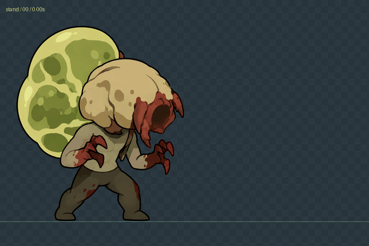
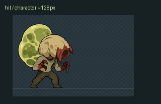
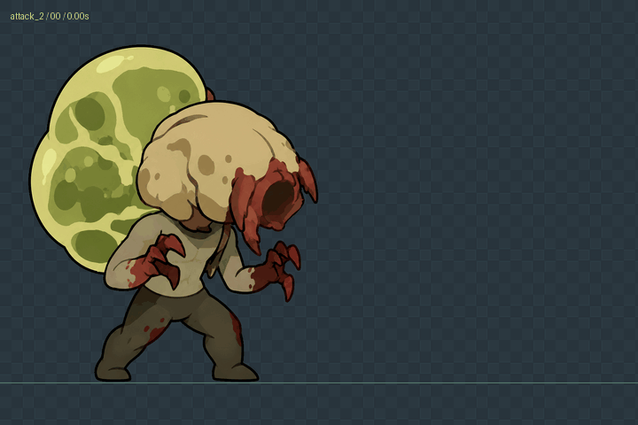
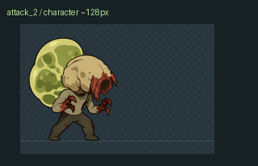
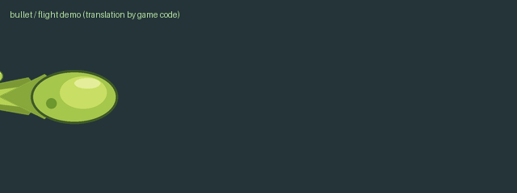

BSQ · 六动作与独立毒液角色动作
待机 / stand
手机尺寸 / 角色约 128 px 高
死亡 / dead手机尺寸 / 角色约 128 px 高
受击 / hit手机尺寸 / 角色约 128 px 高
近战前抓 / attack_1手机尺寸 / 角色约 128 px 高
喷吐 / attack_2
手机尺寸 / 角色约 128 px 高
原地移动 / move手机尺寸 / 角色约 128 px 高
独立毒液 / bullet
单独导入 bullet-4.3.json。下方飞行平移由预览示范，JSON 的 root 保持原点，实际位移由游戏代码控制。
